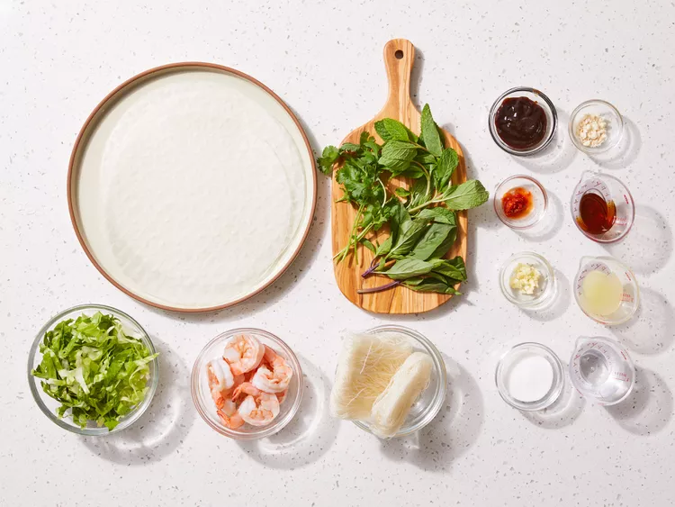
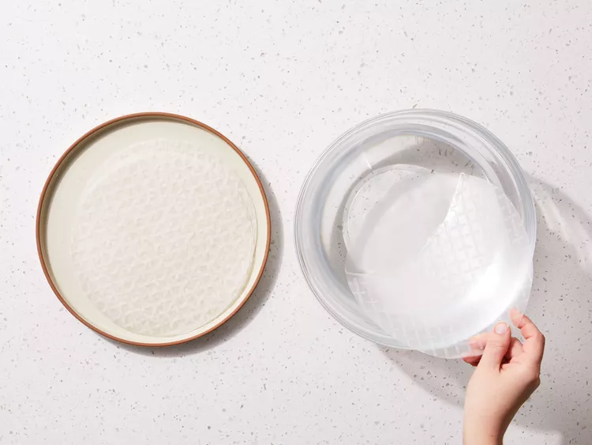
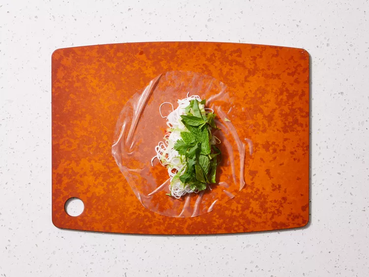
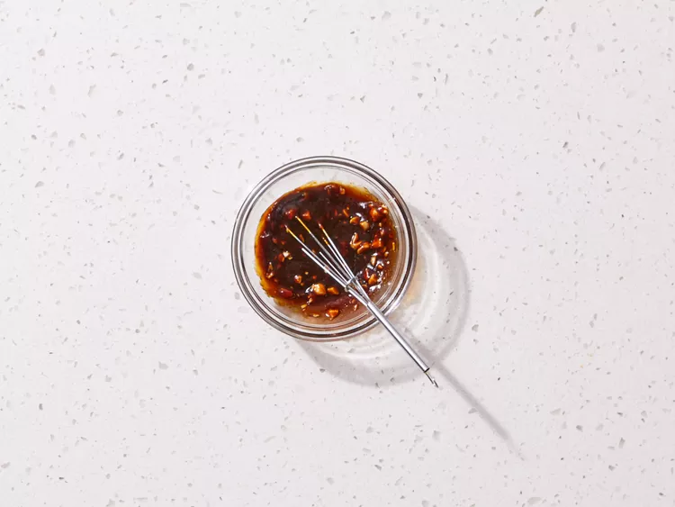
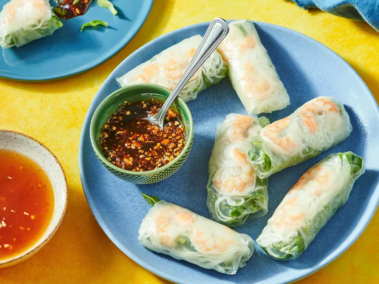

Home
Vietnamese Fresh Spring Rolls

Description
Spring rolls are appetizers that consist of a savory filling in a paper-thin wrapper made from flour and water. The exterior is so thin and crispy, it will shatter to the touch. Spring roll wrappers are thinner and more delicate than egg roll wrappers.
Vietnamese spring rolls (or gỏi cuốn) contain pork, shrimp, rice vermicelli noodles, and vegetables in a rice paper wrapper.
Ingredients
Spring Roll
- 2 ounces rice vermicelli noodles
- 8 rice wrappers (8.5 inch diameter)
- 8 large cooked shrimp, peeled, deveined, and cut in half
- 2 leaves lettuce, chopped
- 3 tablespoons chopped fresh mint leaves
- 3 tablespoons chopped fresh cilantro
- 1 ⅓ tablespoons chopped fresh Thai basil
Sauces
- ¼ cup water
- 2 tablespoons fresh lime juice
- 2 tablespoons white sugar
- 4 teaspoons fish sauce
- 1 clove garlic, minced
- ½ teaspoon chili garlic sauce
- 3 tablespoons hoisin sauce
- 1 teaspoon finely chopped peanuts
Steps
- Gather all ingredients.

- Fill a large pot with lightly salted water and bring to a rolling boil; stir in noodles and return to a boil. Cook noodles uncovered, stirring occasionally, until tender yet firm to the bite, 3 to 5 minutes; drain and set aside to cool.

- Fill a large bowl with warm water. Dip one wrapper into the hot water for 1 second to soften.

- Lay wrapper flat; place 2 shrimp halves, some cooled noodles, lettuce, mint, cilantro, and basil in a line across middle of wrapper, leaving about 2 inches uncovered on each side.

- Fold opposing uncovered sides of wrapper inward, then tightly roll 1 of the opposing edges of the wrapper around the filling. Repeat with remaining ingredients.

- Combine water, lime juice, sugar, fish sauce, garlic, and chili sauce in a small bowl; set aside.

- Combine hoisin sauce and peanuts in a separate small bowl; set aside.

- Serve spring rolls with both sauces for dipping.
